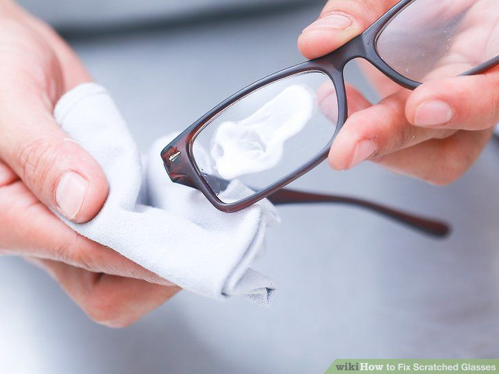

Tips
&
Trick
1. Life hack pertama ini cukup bermanfaat terutama kalau kamu orang yang sibuk. Mau keluar tapi kehabisan deodoran? Potong saja lemon atau jeruk jadi dua dan usapkan ke kulitmu. Bau badanmu dijamin bakal langsung hilang.
2. Kalau sepatu kamu sudah bikin tidak tahan, ini cara mudah untuk menghilangkan baunya. Taruh saja sedikit kantong teh kering di dalam setiap sepatu selama beberapa menit. Kantong tehnya berfungsi sebagai penyerap bau. Namun jika bau sekaligus basah, isi sepatunya dengan campuran nasi dan backing soda, lalu diamkan selama beberapa hari.

3. Gunakan sabun cuci piring untuk membersihkan lensa kacamatamu. Campurkan sabun cuci piring dengan air dalam wadah, rendam kacamata selama beberapa menit, lap perlahan dengan kain basah khusus kacamagta menggunakan larutan sabun tadi sampai kira-kira sudah tidak kotor, bilas dengan air kran / air bersih, terakhir lap dengan kain kering khusus kacamata. Dijamin langsung bening alias HD! hehe.